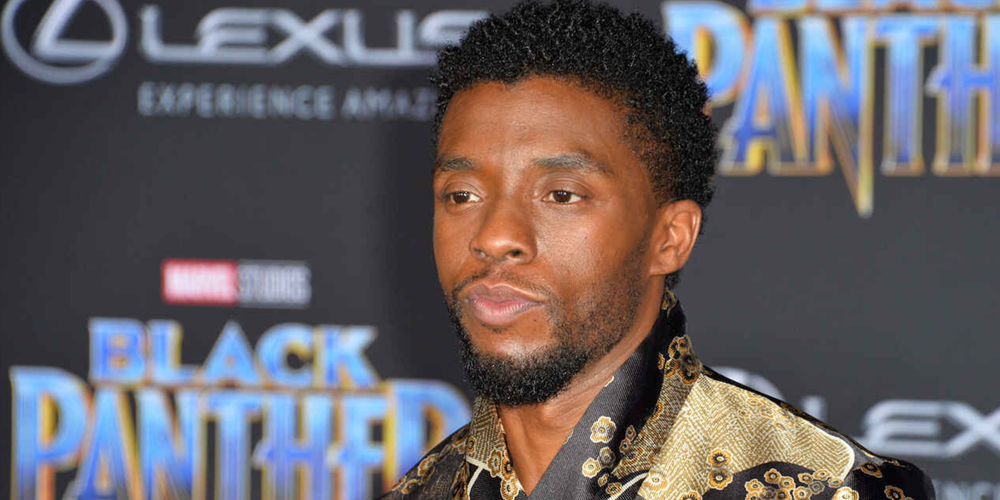

Chadwick Boseman was born on November 29, 1976, and passed away on August 28, 2020. He was a beacon of hope and strength, not just in the world of film, but in the lives of everyone who was touched by his work. His performances transcended the screen, leaving an indelible mark on the hearts of fans worldwide.
Biography
Chadwick Aaron Boseman was an American actor, director, and playwright, known for his versatile and moving portrayals of both fictional and real-life heroes. Raised in Anderson, South Carolina, Boseman was driven by a deep sense of purpose from an early age. He graduated from Howard University, where he was mentored by Phylicia Rashad, and later honed his craft at the British American Drama Academy in Oxford, England.
Boseman's career took off with his portrayal of Jackie Robinson in "42" (2013), where he demonstrated not just his acting prowess, but also his commitment to telling the stories of those who fought for justice and equality. He went on to portray James Brown in "Get on Up" (2014) and Thurgood Marshall in "Marshall" (2017), showcasing his ability to embody complex, historical figures with nuance and depth.
In 2016, Boseman took on the role that would define his career: T'Challa, the Black Panther. As the first Black superhero in mainstream American comics, Black Panther was more than just a character—he was a symbol of empowerment and pride for millions. The film "Black Panther" (2018) was a cultural phenomenon, breaking box office records and becoming a rallying cry for representation in Hollywood.
Despite being diagnosed with stage III colon cancer in 2016, Boseman continued to work tirelessly, starring in "Black Panther," "Avengers: Endgame," "21 Bridges," "Da 5 Bloods," and "Ma Rainey's Black Bottom." His battle with cancer was kept private, a testament to his strength and dedication to his craft. Boseman's final years were marked by performances that will be remembered for their emotional intensity and humanity.
Achievements
- Portrayed T'Challa/Black Panther in Marvel's "Black Panther" (2018), a landmark film for representation and a global cultural touchstone.
- Starred in biographical films like "42" (2013), "Get on Up" (2014), and "Marshall" (2017), earning critical acclaim for his portrayal of iconic Black figures.
- Awarded posthumously the Golden Globe for Best Actor in a Motion Picture Drama for "Ma Rainey's Black Bottom" (2020), a powerful performance that highlighted his incredible talent.
- Left an enduring legacy as a symbol of strength, resilience, and grace in the face of adversity, inspiring countless individuals around the world.
The role of Black Panther was more than just a character for Chadwick Boseman—it was a mantle, a symbol of hope, and a cultural revolution. Through these images, we remember the power, dignity, and grace with which Boseman brought T'Challa to life, inspiring millions across the globe.

A Legacy of Strength and Compassion
Chadwick Boseman was more than just an actor—he was a warrior, both on and off the screen. His quiet strength in the face of unimaginable challenges serves as a reminder of the resilience of the human spirit. Boseman fought not just for himself, but for those who saw themselves in him, for the children who believed they could be heroes too, and for a world that desperately needed to see a Black king on the big screen.
His legacy is one of grace, humility, and unwavering dedication to his craft and his community. He taught us that we must not only embrace our own power but also lift others up with us. Through his roles, his philanthropy, and his life, Chadwick Boseman showed us that true strength lies in the heart.
Inspirational Quotes
"The struggles along the way are only meant to shape you for your purpose."
"Purpose is an essential element of you. It is the reason you are on the planet at this particular time in history."
"You have to cherish things in a different way when you know the clock is ticking, you are under pressure."